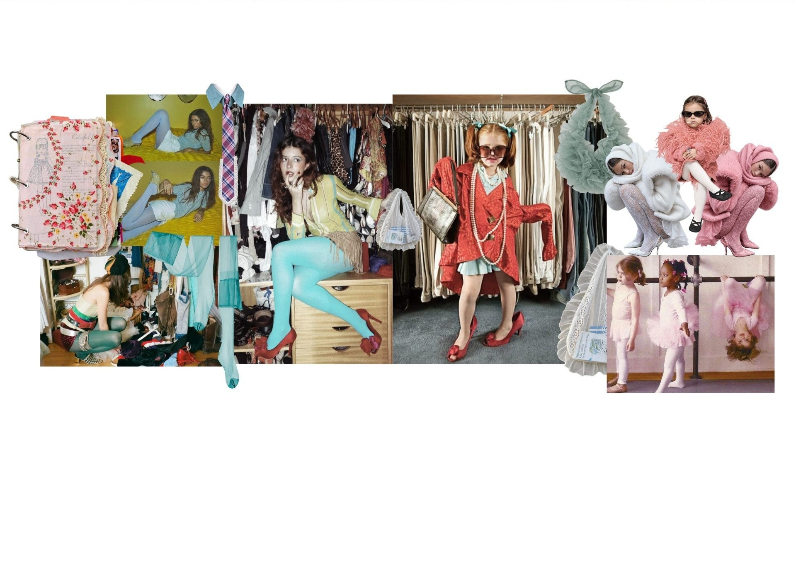
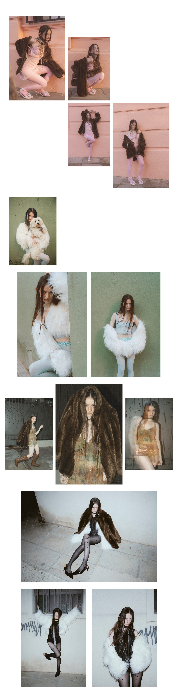

Proyecto 05 — Styling
Ropa de mamá
moodboard.
-Ma tengo un cumple, ¿me prestas tu ropa?
-No mir, sos muy chica para usar ese tipo de ropa.
-¿Un ratito acá en casa?
-Solo un ratito y ojo con mis tapados eh!!!
-Que los tengo hace mil años
-Sí ma, tus zapatos quedan en buenas manos

Sesión de fotos